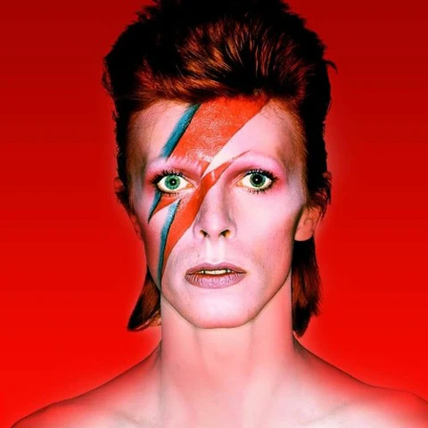

(8 January 1947 – 10 January 2016), known professionally as David Bowie (/ˈboʊi/ BOH-ee),[1] was an English singer, songwriter, musician and actor. Regarded as one of the most influential musicians of the 20th century, Bowie was acclaimed by critics and musicians, particularly for his innovative work during the 1970s. His career was marked by reinvention and visual presentation, and his music and stagecraft has had a significant impact on popular music.
Bowie developed an interest in music from an early age. He studied art, music and design before embarking on a professional career as a musician in 1963. He released a string of unsuccessful singles with local bands and a self-titled solo album (1967) before achieving his first top-five entry on the UK Singles Chart with "Space Oddity" (1969). After a period of experimentation, he re-emerged in 1972 during the glam rock era with the flamboyant and androgynous alter ego Ziggy Stardust. The character was spearheaded by the success of "Starman" and its album The Rise and Fall of Ziggy Stardust and the Spiders from Mars (both 1972), which won him widespread popularity. In 1975, Bowie's style shifted towards a sound he characterised as "plastic soul", initially alienating many of his UK fans but garnering his first major US crossover success with the number-one single "Fame" and the album Young Americans (both 1975). In 1976, Bowie starred in the cult film The Man Who Fell to Earth and released Station to Station. In 1977, he again changed direction with the electronic-inflected album Low, the first of three collaborations with Brian Eno that came to be known as the Berlin Trilogy. "Heroes" (1977) and Lodger (1979) followed; each album reached the UK top five and received lasting critical praise.
A VIDEO ABOUT THE LIFE AND CAREER OF DAVID BOWIE
THE ORIGIN OF DAVID BOWIE(1947-1969)
Birth and early childhood
David Bowie was born David Robert Jones on January 8, 1947, in Brixton, London, England. He was the son of Haywood Stenton Jones, a promotions officer for the Birmingham-based children's charity Barnardo's, and Margaret Mary Jones, a waitress. He had one older brother, Terry, who significantly influenced his early life. Bowie's family moved to the suburb of Bromley when he was six years old. He had a troubled relationship with his parents, particularly with his father, who was distant and stern. His mother was more supportive and encouraged his artistic pursuits.
Teenage Years
Bowie attended Bromley Technical High School, where he developed a keen interest in music and the arts. He showed an early interest in rock and roll, and his exposure to artists like Elvis Presley and Little Richard greatly influenced him. He began playing the saxophone at age 13 and joined a school band called the Konrads.
The Early 60s
During the early 1960s, Bowie adopted the stage name "David Bowie" to avoid confusion with Davy Jones of The Monkees. He began performing with various bands and worked as a commercial artist, using his artistic skills to support his musical ambitions.
First Recordings
In 1964, Bowie recorded his first single, "Liza Jane," with a group called The Konrads, but it did not achieve commercial success. Throughout this period, he continued to explore various musical styles, including folk and pop.
Influence of the Arts
Bowie’s interest in the arts extended beyond music. He was influenced by the burgeoning London art scene and studied mime and theater, which would later inform his theatrical approach to performance.
Ziggy Stardust and Persona Development
In the late 1960s, Bowie began developing his distinct artistic persona. He created a character named Ziggy Stardust, an androgynous alien rock star, which became central to his work. This was partly inspired by the glam rock movement and his interest in exploring themes of identity and gender.
Space Oddity
In 1969, Bowie released "Space Oddity," which became his first significant hit. The song’s themes of space exploration resonated with the public, coinciding with the Apollo 11 moon landing that same year. It established Bowie as a notable figure in the music industry and showcased his innovative style.

EARLY LIFE
David Robert Jones was born on 8 January 1947 in Brixton, London.[2] His mother, Margaret Mary "Peggy" (née Burns),[3] was born at Shorncliffe Army Camp near Cheriton, Kent.[4] Her paternal grandparents were Irish immigrants who had settled in Manchester.[5] She worked as a waitress at a cinema in Royal Tunbridge Wells.[6] His father, Haywood Stenton "John" Jones,[3] was from Doncaster, Yorkshire,[7] and worked as a promotions officer for the children's charity Barnardo's. The family lived at 40 Stansfield Road, on the boundary between Brixton and Stockwell in the south London borough of Lambeth. Bowie attended Stockwell Infants School until he was six, acquiring a reputation as a gifted and single-minded child—and a defiant brawler.[8]
STARMAN
THE 70s: GLAM ROCK ERA
Dressed in a striking costume, his hair dyed reddish-brown, Bowie launched his Ziggy Stardust stage show with the Spiders from Mars—Ronson, Bolder, and Woodmansey—at the Toby Jug pub in Tolworth in Kingston upon Thames on 10 February 1972.[69] The show was hugely popular, catapulting him to stardom as he toured the UK over the next six months and creating, as described by David Buckley, a "cult of Bowie" that was "unique—its influence lasted longer and has been more creative than perhaps almost any other force within pop fandom."[69] The Rise and Fall of Ziggy Stardust and the Spiders from Mars (1972), combining the hard rock elements of The Man Who Sold the World with the lighter experimental rock and pop of Hunky Dory, was released in June and was considered one of the defining albums of glam rock. "Starman", issued as an April single ahead of the album, was to cement Bowie's UK breakthrough: both single and album charted rapidly following his July Top of the Pops performance of the song. The album, which remained in the chart for two years, was soon joined there by the six-month-old Hunky Dory. At the same time, the non-album single "John, I'm Only Dancing" and "All the Young Dudes", a song he wrote and produced for Mott the Hoople,[70] were successful in the UK. The Ziggy Stardust Tour continued to the United States.[71]
THE 80s
Scary Monsters… and Super Creeps was released in September 1980, produced by Bowie and Visconti. It included Bowie's first UK #1 single, Ashes to Ashes, revisiting Major Tom from Space Oddity. The album produced iconic clips for MTV, with further singles like Fashion, the title track, and Up The Hill Backwards. It marked a balance of artistic ambition and commercial success, featuring guitarist Robert Fripp and guest appearances by Pete Townshend.
April 1983 saw the release of Let’s Dance, Bowie's first for EMI, becoming his most commercially successful album, selling 7 million copies worldwide. The title track topped charts globally, followed by hits Modern Love and China Girl. Produced by Nile Rodgers and featuring Stevie Ray Vaughan, Let’s Dance influenced many bands, including Duran Duran and The Killers.
Bowie's Serious Moonlight tour in 1983 established him as a global stadium act, selling over 2.5 million tickets. In 1984, the upbeat tone continued with Tonight, and Bowie received MTV’s Video Vanguard honor. His Live Aid appearance in 1985 and duet with Mick Jagger furthered his momentum, along with the album Never Let Me Down in 1987. In 1988, Bowie formed the band Tin Machine, emphasizing a full-time group identity. With the Sales Brothers and guitarist Reeves Gabrels, Tin Machine released two albums and showcased a stripped-down sound, though it confused some fans before going on hiatus after their second LP in 1991.
Despite its status it was, by the time David arrived in 1958, as rich in arcane ritual as any [English] public school. There were houses named after eighteenth-century statesmen like Pitt and Wilberforce. There was a uniform and an elaborate system of rewards and punishments. There was also an accent on languages, science and particularly design, where a collegiate atmosphere flourished under the tutorship of Owen Frampton. In David's account, Frampton led through force of personality, not intellect; his colleagues at Bromley Tech were famous for neither and yielded the school's most gifted pupils to the arts, a regime so liberal that Frampton actively encouraged his own son, Peter, to pursue a musical career with David, a partnership briefly intact thirty years later.[15]